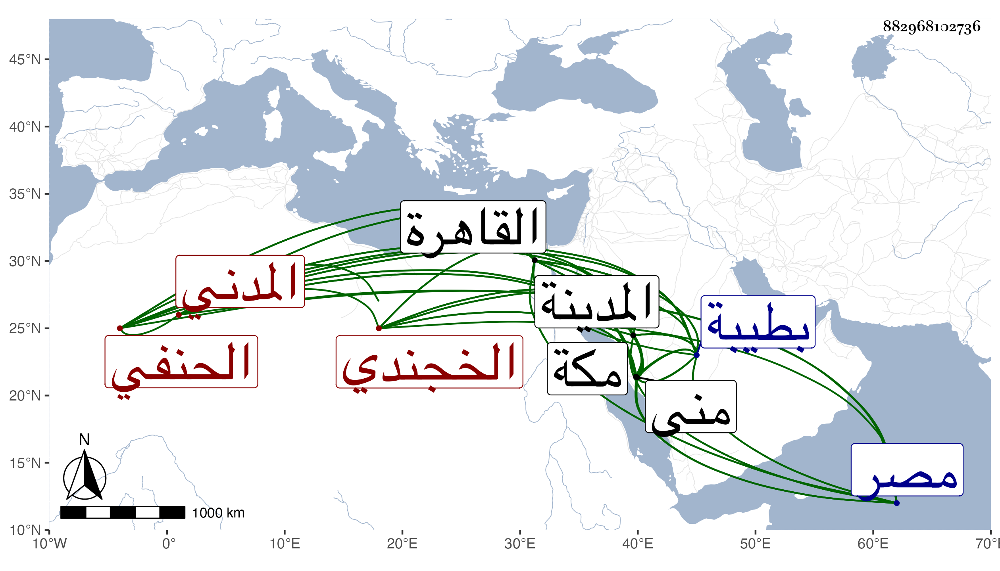

0902Sakhawi.DawLamic.ITO20230111-ara1.EIS1600.882968102736
Biography ID: 882968102736
إبراهيم بن محمد بن إبراهيم بن العلامة جلال الدين أحمد بن محمد بن محمد البرهان أبو إسحاق الخجندي المدني الحنفي سبط أبي الهدى بن تقي الكازروني وأحد أعيان بلده بل إمام الحنفية بها . ولد في يوم الجمعة عاشر جمادى الأولى سنة اثنتين وخمسين وثمانمائة بطيبة ونشأ بها فحفظ القرآن والكنز وأخذ في الفقه ببلده على أخيه الشهاب أحمد والفخر عثمان الطرابلسي وفي العربية وعلم الكلام عن الشهاب بن يونس المغربي وكذا أخذ في شرح العقائد عن السيد السمهودي وسمع على أبيه وأبي الفرج المراغي وقرأ بمكة في منى على النجم بن فهد الثلاثيات ودخل القاهرة مرارا أولها في سنة أربع وسبعين وسمع بها على النشاوي والديمي وأجاز له جماعة وأخذ فيها عن الزين قاسم والعضدي الصيرامي الفقه وغيره وعن نظام الفقه والأصول والعربية وعن الجوجري العربية وكذا قرأ فيها على الزيني زكريا شرحه لشذور الذهب ولازم الأمين الأقصرائي في فنون وقرأ عليه كثيرا وأكثر أيضا من ملازمتي رواية ودراية ثم كان ممن لازمني حين إقامتي بطيبة وقرأ علي جميع ألفية العراقي بحثا وحمل عني كثيرا من شرحها للناظم سماعا وقراءة وغير ذلك من تأليفي ومروياتي وأذنت له على الوجه الذي أثبته في ترجمته من تاريخ المدينة وغيره وقد ولي إمامة الحنفية بالمدينة بعد أخيه وتزوج ابنة الشيخ محمد المراغي ونعم الرجل فضلا وعقلا وتواضعا وسكونا وأصلا وسمعته ينشد مما قاله وهو بالقاهرة لما بلغه ما وقع من الحريق بالمسجد النبوي :
| قلت بمصر جاءنا في خبر | وقد جرى بطيبة أمر مهول |
| خافت النار إلها فالتجت | تتشفع لائذة بالرسول صلى الله عليه وسلم |
مات فجأة تحت ساقط له في جمادى الأولى سنة ثمان وتسعين وتأسفنا عليه رحمه الله .
